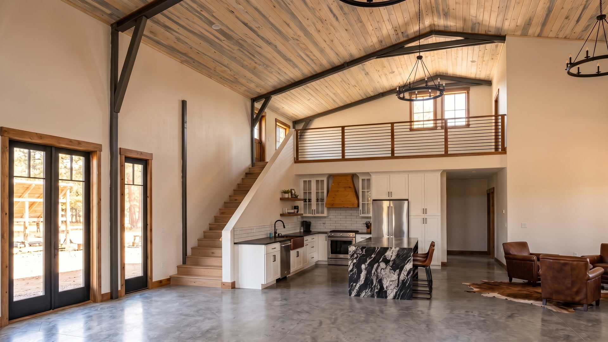
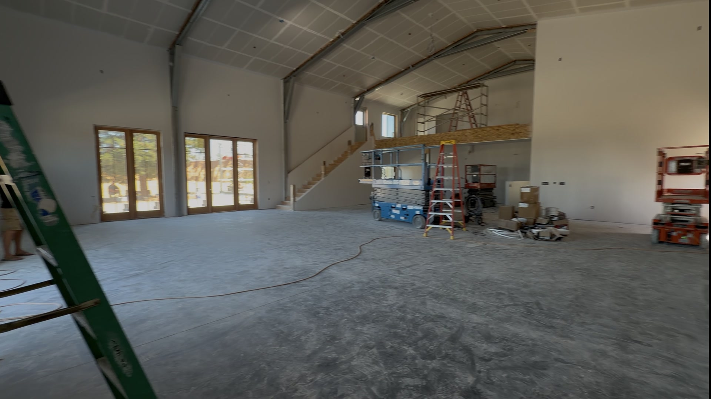
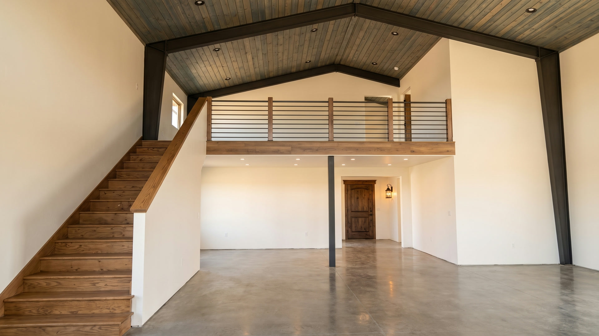
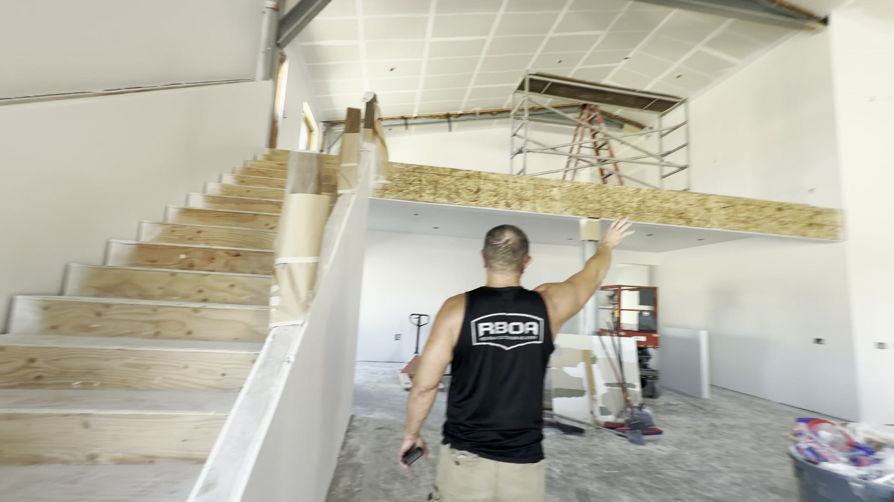
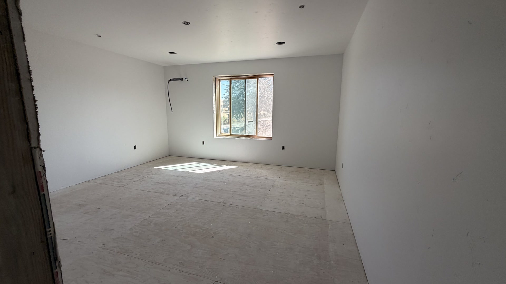
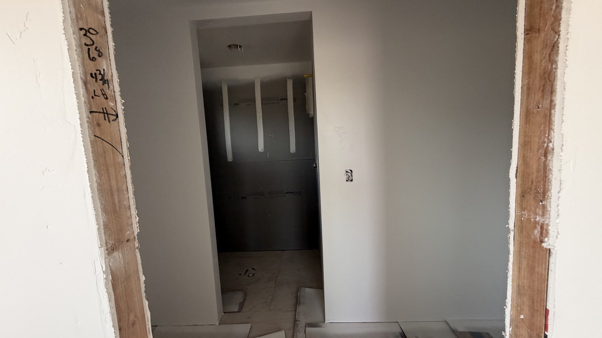

01

Ground Floor & Kitchen
Kitchen under the left end of the mezzanine. Straight enclosed stair, polished concrete, blue-stain pine vault on charcoal steel.

Working Set · August 2026
Each rendering is a direct edit of the construction photograph beside it. Walls, ceilings, windows, doors and their positions are the building's own. Only the finishes are added.
Renderings, not photographs. Materials reflect selections on record; exact colours, grain and fixtures will vary from the finished build.
Partial set. The upper floor — great room, dining, games, hall — is being rebuilt to this same method and is not shown yet. Exteriors are being re-lit: the glass-door elevation faces east and takes morning light, not evening.

Kitchen under the left end of the mezzanine. Straight enclosed stair, polished concrete, blue-stain pine vault on charcoal steel.


Single straight run with its solid drywall balustrade. No landing. The mezzanine stays small — one end only.


Flat ceiling, square corners, window where it actually is. Finishes only.


Multicolor slate and a river-pebble pan, in the existing alcove.
